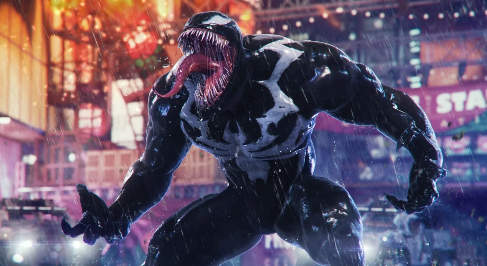

Marvel’s Spider-Man: Una Aventura Increíble

Los juegos de Spider-Man para PS4 y PS5 han revolucionado la manera en que vivimos la experiencia del superhéroe. La saga comienza con Peter Parker enfrentando una de sus mayores amenazas: Wilson Fisk, alias Kingpin, y posteriormente al misterioso Mister Negative. Con una jugabilidad fluida, un sistema de combate espectacular y una historia profunda, el juego ha capturado la esencia del héroe.
En Spider-Man: Miles Morales, seguimos a Miles mientras aprende a usar sus nuevas habilidades bioeléctricas. Su historia es un reflejo de crecimiento y responsabilidad, mientras enfrenta amenazas como The Tinkerer y su grupo Underground. Ambos juegos han sido aclamados por su narrativa, gráficos y mecánicas de mundo abierto.
Peter Parker, el Spider-Man original en esta saga de videojuegos, es un héroe experimentado que lleva años luchando contra el crimen en Nueva York. Trabaja con el Dr. Otto Octavius, quien posteriormente se convierte en Doctor Octopus, uno de sus mayores enemigos. Peter también enfrenta dilemas personales, como su relación con Mary Jane Watson y su responsabilidad con su tía May.
A lo largo del juego, Peter debe detener la amenaza de los Seis Siniestros, un grupo de villanos liderados por Octavius. La historia muestra su crecimiento como héroe y cómo enfrenta pérdidas personales significativas, consolidándolo como un personaje con gran profundidad emocional.
Miles Morales es el segundo Spider-Man en este universo, con habilidades únicas como la bioelectricidad y la invisibilidad. Tras la aparente muerte de Peter durante un viaje, Miles debe asumir la responsabilidad de proteger la ciudad por su cuenta. Su historia se centra en el descubrimiento de su identidad como héroe y en la lucha contra el grupo Underground.
Miles enfrenta la traición de personas cercanas y la difícil decisión de priorizar su deber como Spider-Man sobre su vida personal. Su evolución como personaje y su estilo de combate lo diferencian de Peter, dándole una identidad propia en el universo de los videojuegos.

Los juegos presentan una gran variedad de trajes para Peter y Miles, cada uno con habilidades únicas. Desde el icónico traje clásico hasta versiones avanzadas con tecnología Stark, los jugadores pueden desbloquear trajes con mejoras en combate y movilidad.
Miles también cuenta con trajes únicos, como el de Spider-Verse, que imita la animación de la película, y el Traje 2099. Estos trajes no solo aportan estilo, sino que también afectan la jugabilidad con nuevas mecánicas y efectos visuales impresionantes.

Venom es el villano final de Spider-Man 2, encarnado en Harry Osborn tras su infección con el simbionte. Su aparición introduce una mecánica de juego oscura donde Peter se ve afectado por el simbionte, ganando habilidades pero perdiendo el control.
Eventualmente, Peter y Miles deben enfrentarse a Venom en una de las batallas más épicas de la saga. Con habilidades destructivas y una historia llena de giros, la inclusión de Venom ha sido uno de los momentos más impactantes del juego.
¡Sorteo de una PS5 con Spider-Man 2!
Participa en nuestro sorteo y gana una PlayStation 5 con Marvel’s Spider-Man 2.